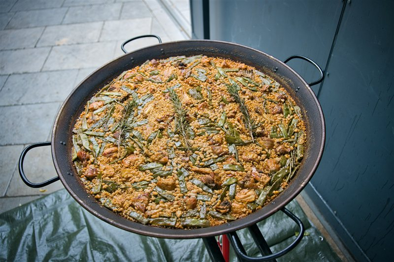
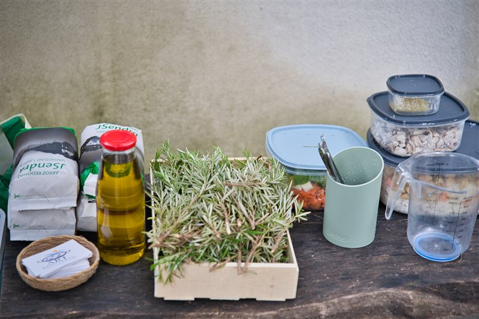
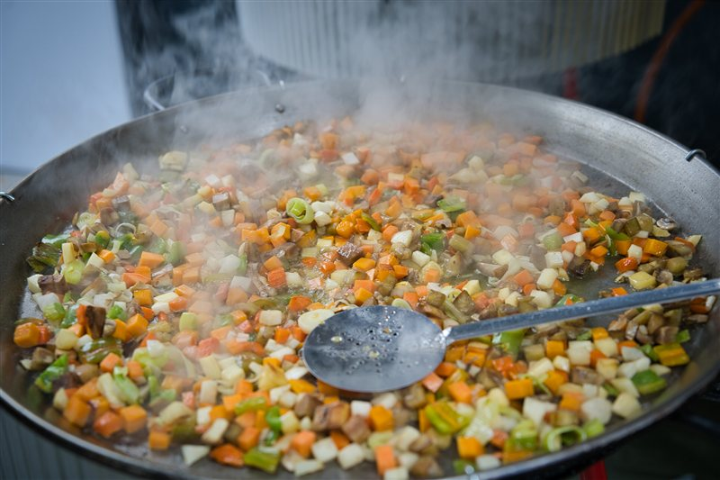

Notre carte · Chef privé
Une paella, une saison,
une histoire à partager.
Nos spécialités valenciennes, des créations au fil des saisons et une paella imaginée pour vous. Une cuisine méditerranéenne préparée chez vous, pour le plaisir de partager.
À partir de 17 € / personne
Événements de 8 à 35 personnes · Prestation du chef, déplacement et installation sur devis.



01 · Toute l’année
Les incontournables
Nos spécialités valenciennes et méditerranéennes, proposées toute l’année.
Les riz
- Paella valencienne traditionnelle — poulet, haricots verts, garrofó et romarin (lapin en option)17 €
- Riz noir à la seiche et aux calamars22 €
- Riz del senyoret — calamar, dorade et crevettes22 €
- Riz au lapin, aux escargots, au poivron rouge et au romarin19 €
- Riz aux légumes de saison18 €
- Riz aux boudins blanc et noir, à la poitrine et aux travers de porc, aux pommes de terre et à la tomate21 €
- Riz aux boulettes truffées, au boudin blanc et aux épinards22 €
- Riz au poulpe et aux pommes de terre23 €
Les fideuàs
- Fideuà noire au calamar et au bar22 €
- Fideuà del senyoret — calamar, dorade et crevettes22 €
02 · Au fil de l’année
Les créations de saison
Des recettes inspirées des produits du marché. Découvrez chaque saison et ses saveurs.
Automne · Septembre – novembre
- Riz à la courge rôtie, champignons et romarin19 €
- Riz au secreto de porc, champignons et courge23 €
Hiver · Décembre – février
- Riz meloso au cabillaud et chou-fleur21 €
- Riz aux artichauts et légumes d’hiver19 €
Printemps · Mars – mai
- Riz aux artichauts, asperges vertes et fèves20 €
- Riz sec au chou-fleur et au cabillaud21 €
Été · Juin – août
- Fideuà à l’aubergine et aïoli à l’algue nori19 €
- Riz au poulpe et aux artichauts23 €
03 · À votre image
Votre paella sur mesure
Chaque événement est unique. Votre paella aussi.
Chez ART MEDITERRANI, notre carte est une source d’inspiration, pas une limite à votre imagination. Roberto imagine avec vous une recette adaptée à vos goûts et à votre événement.
Riz sec, riz meloso ou fideuà : nous choisissons ensemble les ingrédients et les associations, selon la saison et les possibilités culinaires.
Prix par personne, hors prestation événementielle. Recettes et tarifs indicatifs.
04 · Une expérience à partager
Atelier Paella & Fideuà
Apprenez, cuisinez et partagez un véritable moment méditerranéen.
Plongez dans l’univers des riz valenciens et découvrez les secrets d’une paella authentique et d’une fideuà savoureuse, aux côtés de Roberto.
- 70 € / personne
- Minimum 8 participants
- Environ 3 heures
- 2 préparations : un riz et une fideuà
- Dégustation & repas inclus
Tout est inclus dans votre atelier
- Un dossier théorique complet à conserver: toutes les recettes réalisées, conseils et astuces de chef, variétés de riz, proportions riz-bouillon, techniques de cuisson, préparation des fonds et bouillons.
- Deux spécialités cuisinées ensemble: un riz traditionnel et une fideuà, réalisés étape par étape.
- Sangria à volonté: avec et sans alcool, pendant l’atelier.
- Dégustation sur place: des deux préparations.
- Repas convivial et familial: autour de la table, pour partager les plats préparés ensemble.
Au programme
De la sélection des ingrédients à la maîtrise du feu, en passant par le sofrito, la préparation des fonds et les proportions de cuisson, découvrez les gestes essentiels pour réussir vos riz et fideuàs chez vous.
Bien plus qu’un cours de cuisine : un moment de transmission, de partage et de saveurs méditerranéennes.
Demander un devis ↗